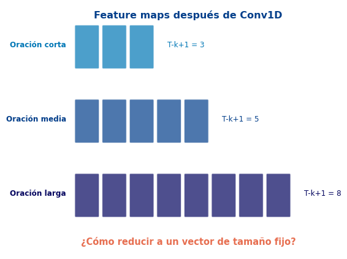
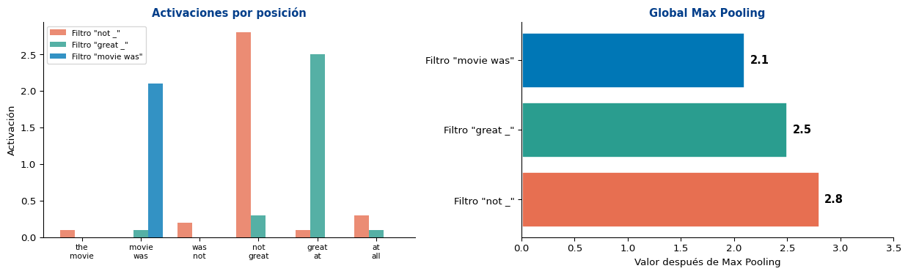
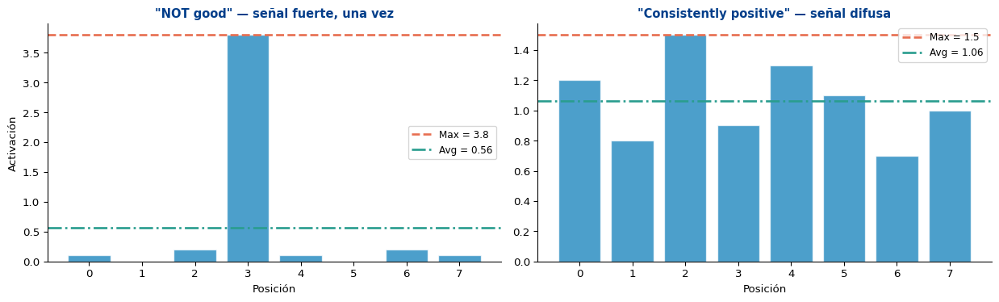
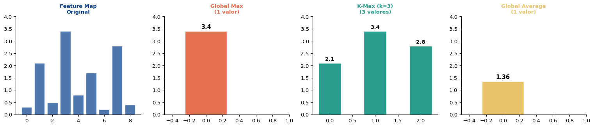
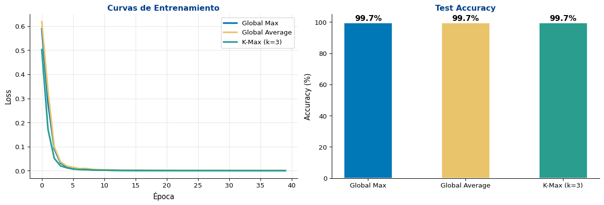

S2: Max Pooling Global vs. Local
Universidad Católica Boliviana
2026-04-08
Objetivo
Comparar diferentes estrategias de pooling para agregar información de secuencias de longitud variable en un vector de tamaño fijo, y entender cuándo usar cada una.
Prerequisitos: Conv1D para texto (S1)
Las oraciones tienen longitud diferente:

De cada feature map (lista de activaciones), tomar el valor máximo:
\[\hat{h}_j = \max_{i=1}^{T-k+1} h_j^{(i)}\]
import torch
import torch.nn as nn
# Simular feature maps de un filtro para 3 oraciones de diferente longitud
torch.manual_seed(42)
maps = {
"short (T=5)": torch.relu(torch.randn(1, 4, 3)), # 4 filtros, 3 posiciones
"medium (T=8)": torch.relu(torch.randn(1, 4, 6)), # 4 filtros, 6 posiciones
"long (T=15)": torch.relu(torch.randn(1, 4, 13)), # 4 filtros, 13 posiciones
}
print("Global Max Pooling: extrae 1 valor (máximo) por filtro")
print("=" * 55)
for name, fmap in maps.items():
pooled = fmap.max(dim=2).values # (1, 4)
print(f" {name}: feature map {list(fmap.shape)} → max pooled {list(pooled.shape)}")Global Max Pooling: extrae 1 valor (máximo) por filtro
=======================================================
short (T=5): feature map [1, 4, 3] → max pooled [1, 4]
medium (T=8): feature map [1, 4, 6] → max pooled [1, 4]
long (T=15): feature map [1, 4, 13] → max pooled [1, 4]
Lo que se pierde
Max pooling solo retiene la activación más fuerte. Si un patrón aparece 3 veces o 30 veces, el resultado es el mismo. Perdemos información sobre frecuencia y posición.
En lugar del máximo, tomar el promedio de las activaciones:
\[\hat{h}_j = \frac{1}{T-k+1} \sum_{i=1}^{T-k+1} h_j^{(i)}\]
# Comparar max vs average pooling
feature_map = torch.tensor([[[0.1, 0.0, 3.5, 0.2, 0.1]]]) # (1, 1, 5)
max_pool = feature_map.max(dim=2).values
avg_pool = feature_map.mean(dim=2)
print("Feature map:", feature_map.squeeze().tolist())
print(f"Max pooling: {max_pool.item():.2f} ← captura el pico")
print(f"Avg pooling: {avg_pool.item():.2f} ← diluye el pico")
# Caso: patrón frecuente
feature_map2 = torch.tensor([[[1.2, 1.5, 1.3, 1.4, 1.1]]])
max_pool2 = feature_map2.max(dim=2).values
avg_pool2 = feature_map2.mean(dim=2)
print(f"\nFeature map: {feature_map2.squeeze().tolist()}")
print(f"Max pooling: {max_pool2.item():.2f} ← similar al promedio")
print(f"Avg pooling: {avg_pool2.item():.2f} ← captura la consistencia")Feature map: [0.10000000149011612, 0.0, 3.5, 0.20000000298023224, 0.10000000149011612]
Max pooling: 3.50 ← captura el pico
Avg pooling: 0.78 ← diluye el pico
Feature map: [1.2000000476837158, 1.5, 1.2999999523162842, 1.399999976158142, 1.100000023841858]
Max pooling: 1.50 ← similar al promedio
Avg pooling: 1.30 ← captura la consistencia
La clave
Propuesto por Kalchbrenner et al. (2014): en lugar de 1 solo valor, retener los \(k\) valores más altos (preservando su orden):
\[\text{k-max}(\mathbf{h}) = \text{sort}(\text{top-}k(\mathbf{h}))\]
def k_max_pooling(x, k):
"""
x: (batch, channels, length)
Retorna: (batch, channels, k) — top-k valores en orden original
"""
topk_vals, topk_idx = x.topk(k, dim=2)
# Ordenar por posición para preservar el orden de la secuencia
sorted_idx = topk_idx.sort(dim=2).values
return x.gather(2, sorted_idx)
# Ejemplo
feature_map = torch.tensor([[[0.1, 2.5, 0.3, 3.1, 0.8, 1.9, 0.2]]])
print(f"Feature map: {feature_map.squeeze().tolist()}")
print(f"Max pooling: {feature_map.max(dim=2).values.squeeze().tolist()}")
print(f"K-max (k=3): {k_max_pooling(feature_map, k=3).squeeze().tolist()}")
print(f"Avg pooling: {feature_map.mean(dim=2).squeeze().item():.2f}")Feature map: [0.10000000149011612, 2.5, 0.30000001192092896, 3.0999999046325684, 0.800000011920929, 1.899999976158142, 0.20000000298023224]
Max pooling: 3.0999999046325684
K-max (k=3): [2.5, 3.0999999046325684, 1.899999976158142]
Avg pooling: 1.27
| Estrategia | Salida por filtro | Información retenida | Mejor para |
|---|---|---|---|
| Global Max | 1 escalar | Solo el pico | Patrones puntuales |
| Global Average | 1 escalar | Promedio general | Tono difuso |
| K-Max | \(k\) escalares | Top-\(k\) en orden | Balance de ambos |
import random
import torch.optim as optim
torch.manual_seed(42)
random.seed(42)
np.random.seed(42)
# --- Datos: sentimiento sintético (reusar vocabulario simple) ---
positive_words = ["great", "amazing", "wonderful", "excellent", "fantastic", "brilliant",
"superb", "loved", "enjoyed", "outstanding", "perfect", "best"]
negative_words = ["terrible", "horrible", "awful", "worst", "dreadful", "boring",
"bad", "hated", "poor", "disappointing", "weak", "disaster"]
neutral_words = ["the", "a", "movie", "film", "was", "is", "this", "that", "very",
"really", "quite", "it", "and", "but", "with", "not"]
all_words = sorted(set(positive_words + negative_words + neutral_words))
word2idx = {"<PAD>": 0}
for w in all_words:
word2idx[w] = len(word2idx)
VOCAB = len(word2idx)
def make_sentence(label, min_len=5, max_len=12):
length = random.randint(min_len, max_len)
words_pool = positive_words if label == 1 else negative_words
n_key = random.randint(1, 3)
sent = random.choices(neutral_words, k=length - n_key) + random.choices(words_pool, k=n_key)
random.shuffle(sent)
return sent
def encode(sent, max_len=12):
ids = [word2idx.get(w, 0) for w in sent[:max_len]]
return ids + [0] * (max_len - len(ids))
# Generar
data = []
for _ in range(800):
data.append((make_sentence(1), 1))
data.append((make_sentence(0), 0))
random.shuffle(data)
X = torch.tensor([encode(s) for s, _ in data])
y = torch.tensor([l for _, l in data])
split = int(0.8 * len(X))
X_train, y_train = X[:split], y[:split]
X_test, y_test = X[split:], y[split:]
print(f"Vocab: {VOCAB} | Train: {len(X_train)} | Test: {len(X_test)}")Vocab: 41 | Train: 1280 | Test: 320class CNNWithPooling(nn.Module):
def __init__(self, vocab_size, embed_dim, n_filters, kernel_sizes,
n_classes, pooling='max', k_max=3, pad_idx=0):
super().__init__()
self.pooling = pooling
self.k_max_val = k_max
self.embedding = nn.Embedding(vocab_size, embed_dim, padding_idx=pad_idx)
self.convs = nn.ModuleList([
nn.Conv1d(embed_dim, n_filters, k) for k in kernel_sizes
])
if pooling == 'kmax':
fc_input = n_filters * len(kernel_sizes) * k_max
else:
fc_input = n_filters * len(kernel_sizes)
self.dropout = nn.Dropout(0.3)
self.fc = nn.Linear(fc_input, n_classes)
def forward(self, x):
emb = self.embedding(x).permute(0, 2, 1)
conv_outs = []
for conv in self.convs:
h = torch.relu(conv(emb))
if self.pooling == 'max':
h = h.max(dim=2).values
elif self.pooling == 'avg':
h = h.mean(dim=2)
elif self.pooling == 'kmax':
k = min(self.k_max_val, h.size(2))
h = h.topk(k, dim=2).values
h = h.view(h.size(0), -1)
conv_outs.append(h)
cat = torch.cat(conv_outs, dim=1)
return self.fc(self.dropout(cat))
# Entrenar las 3 variantes
def train_eval(pooling, k_max=3, n_epochs=40):
model = CNNWithPooling(VOCAB, embed_dim=32, n_filters=32, kernel_sizes=[2,3,4],
n_classes=2, pooling=pooling, k_max=k_max)
opt = optim.Adam(model.parameters(), lr=0.003)
crit = nn.CrossEntropyLoss()
losses = []
for epoch in range(n_epochs):
model.train()
idx = torch.randperm(len(X_train))
e_loss, n_b = 0, 0
for i in range(0, len(X_train), 64):
bi = idx[i:i+64]
loss = crit(model(X_train[bi]), y_train[bi])
opt.zero_grad(); loss.backward(); opt.step()
e_loss += loss.item(); n_b += 1
losses.append(e_loss / n_b)
model.eval()
with torch.no_grad():
acc = (model(X_test).argmax(1) == y_test).float().mean().item()
n_params = sum(p.numel() for p in model.parameters())
return losses, acc, n_params
results = {}
for pool in ['max', 'avg', 'kmax']:
losses, acc, n_params = train_eval(pool)
results[pool] = {'losses': losses, 'acc': acc, 'params': n_params}
label = f"{'K-Max (k=3)' if pool == 'kmax' else pool.capitalize()}"
print(f"{label:>12s}: Acc = {acc:.1%} | Params = {n_params:,}") Max: Acc = 99.7% | Params = 10,818
Avg: Acc = 99.7% | Params = 10,818
K-Max (k=3): Acc = 99.7% | Params = 11,202
| Pooling | Accuracy | Parámetros | Salida por filtro |
|:--------|:---------|:-----------|:------------------|
| **Global Max** | 99.7% | 10,818 | 1 escalar |
| **Global Average** | 99.7% | 10,818 | 1 escalar |
| **K-Max (k=3)** | 99.7% | 11,202 | 3 escalares |Observaciones
LinearCuando hay tokens <PAD>, las activaciones convolucionales sobre padding deberían ser cero o cercanas a cero.
Dividir solo por la longitud real, no la longitud con padding:
\[\hat{h}_j = \frac{1}{L_{\text{real}}} \sum_{i=1}^{L_{\text{real}}} h_j^{(i)}\]
# Demostrar el efecto del padding en average pooling
activations_real = torch.tensor([[[2.1, 1.5, 1.8, 0.0, 0.0]]]) # 3 reales + 2 PAD
# Average naive (incluye padding)
avg_naive = activations_real.mean(dim=2)
# Average adaptativo (solo cuenta tokens reales)
real_length = 3
avg_adaptive = activations_real[:, :, :real_length].mean(dim=2)
max_pool = activations_real.max(dim=2).values
print(f"Activaciones: {activations_real.squeeze().tolist()}")
print(f" (3 reales + 2 PAD)")
print(f"\nMax pooling: {max_pool.item():.2f} ← no afectado por PAD")
print(f"Avg naive: {avg_naive.item():.2f} ← diluido por PAD (÷5)")
print(f"Avg adaptativo: {avg_adaptive.item():.2f} ← correcto (÷3)")Activaciones: [2.0999999046325684, 1.5, 1.7999999523162842, 0.0, 0.0]
(3 reales + 2 PAD)
Max pooling: 2.10 ← no afectado por PAD
Avg naive: 1.08 ← diluido por PAD (÷5)
Avg adaptativo: 1.80 ← correcto (÷3)AdaptiveMaxPool1d en PyTorchPyTorch ofrece capas adaptativas que producen un tamaño fijo sin importar la entrada:
# AdaptiveMaxPool1d: salida de tamaño fijo independiente de la entrada
pool_1 = nn.AdaptiveMaxPool1d(output_size=1) # Global max pooling
pool_3 = nn.AdaptiveMaxPool1d(output_size=3) # K-max-like (k=3)
# Secuencias de diferente longitud
short = torch.relu(torch.randn(1, 4, 5)) # 4 filtros, 5 posiciones
long = torch.relu(torch.randn(1, 4, 20)) # 4 filtros, 20 posiciones
print("AdaptiveMaxPool1d(output_size=1):")
print(f" Input (1,4,5) → Output {pool_1(short).shape}")
print(f" Input (1,4,20) → Output {pool_1(long).shape}")
print(f"\nAdaptiveMaxPool1d(output_size=3):")
print(f" Input (1,4,5) → Output {pool_3(short).shape}")
print(f" Input (1,4,20) → Output {pool_3(long).shape}")AdaptiveMaxPool1d(output_size=1):
Input (1,4,5) → Output torch.Size([1, 4, 1])
Input (1,4,20) → Output torch.Size([1, 4, 1])
AdaptiveMaxPool1d(output_size=3):
Input (1,4,5) → Output torch.Size([1, 4, 3])
Input (1,4,20) → Output torch.Size([1, 4, 3])En la práctica
nn.AdaptiveMaxPool1d(1) es equivalente a global max pooling y es la forma “limpia” de implementarlo en PyTorch. Es independiente de la longitud de la secuencia.
| Tipo | Captura |
|---|---|
| Max | ¿Aparece el patrón? (binario) |
| Average | ¿Cuánto aparece en promedio? |
| K-Max | ¿Cuáles son las top-\(k\) activaciones? |
Tensor.max(dim=2) — global max pooling manualnn.AdaptiveMaxPool1d(1) — versión PyTorchTensor.mean(dim=2) — average pooling (cuidado con padding)Tensor.topk(k, dim=2) — k-max poolingSemana 8, S3: Comparación RNNs vs. CNNs para Clasificación
Lectura:
Recordatorio:
¡Gracias!
📧 fsuarez@ucb.edu.bo
🔗 Materiales: github.com/fjsuarez/ucb-nlp
NLP y Análisis Semántico | Semana 8